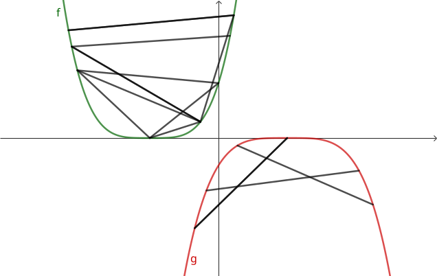
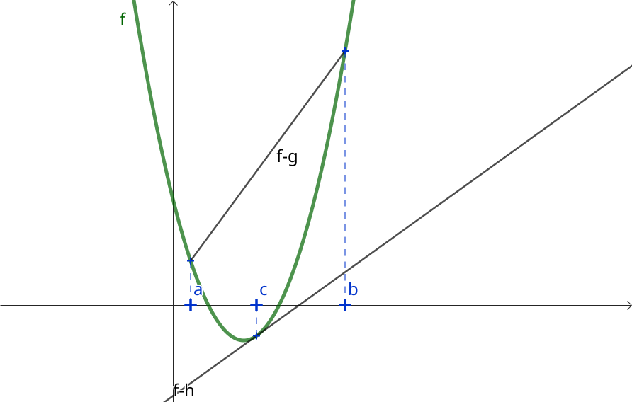
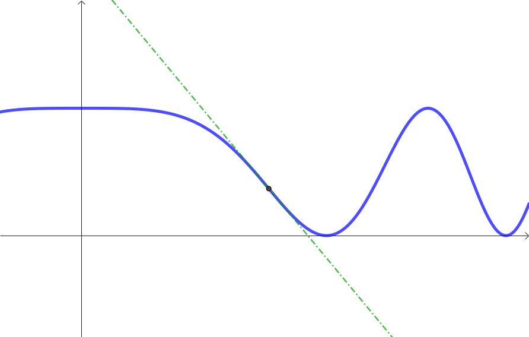
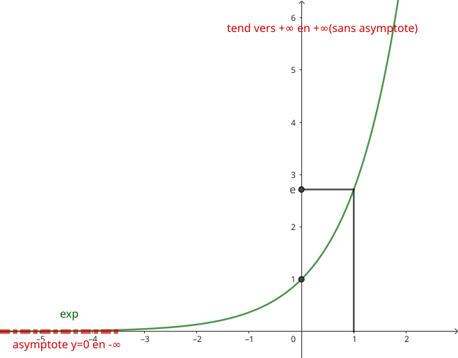
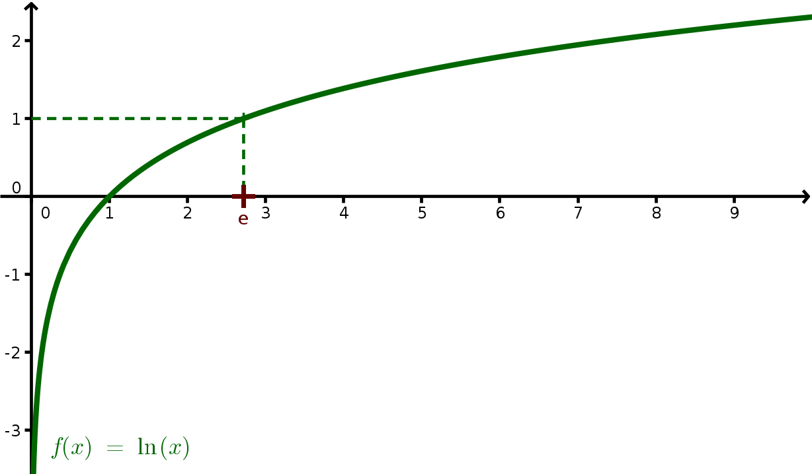
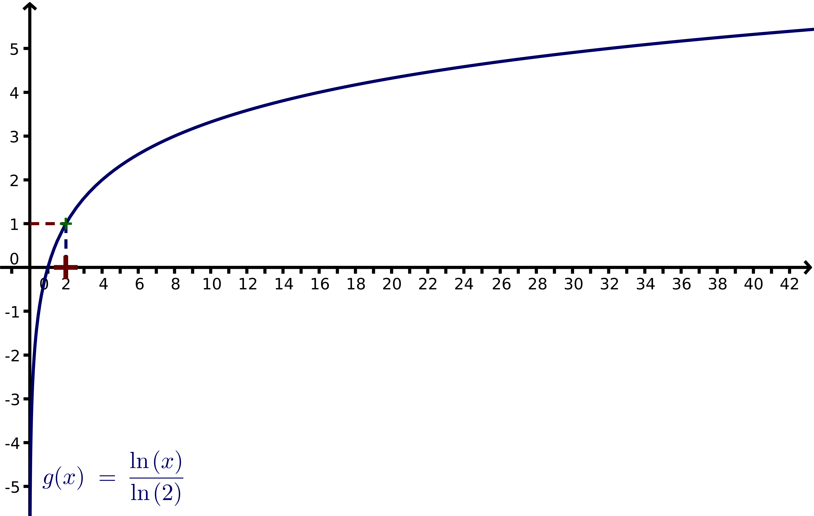
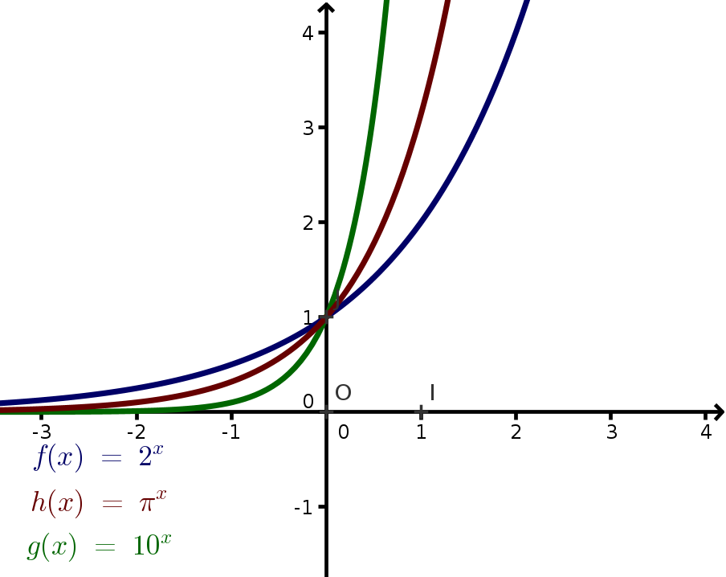

Un segment joignant deux points d'une courbe est une corde de cette courbe.
\(f\) est une fonction définie sur un intervalle.
On dit que \(f\) est convexe lorsque pour toute corde de la courbe de
\(f\), cette courbe est en dessous de chaque corde.
On dit que \(f\) est concave lorsque pour toute corde de la courbe de
\(f\), cette courbe est au dessus de chaque corde.
\(f\) est convexe sur un intervalle \(I\) équivaut à \(-f\) est concave sur \(I\).
Sur le graphique ci-contre, \(f\) est convexe et \(g\) est concave.

Compléter :
La fonction carré est ...
La fonction valeur absolue est ...
La fonction cube ...
Dérivée seconde et convexité
\(f\) est une fonction deux fois dérivable sur un intervalle \(I\) (on peut calculer la dérivée
\(f''\) de
la dérivée \(f'\) de la fonction \(f\)) ; alors, les affirmations suivantes sont équivalentes :
\(f''\) est positive sur \(I\).
\(f'\) est croissante sur \(I\).
la courbe de \(f\) est au dessus de ses tangentes sur \(I\).
\(f\) est convexe sur \(I\).
De même, les affirmations suivantes sont équivalentes :
\(f''\) est négative sur \(I\).
\(f'\) est décroissante sur \(I\).
la courbe de \(f\) est en dessous de ses tangentes sur \(I\).
\(f\) est concave sur \(I\).
Démonstration partielle
\(f\) est une fonction deux fois dérivable sur un intervalle \(I\). On prend \(a<c<b\)
tous dans \(I\) et on définit pour tout \(x\in I\) :
Calculer \(g'\) et \(h'\) ; en déduire que \(f''=g''=h''\)
Dans la propriété précédente :
A⇒B est vraie.
Démontrer que B⇒C et que B⇒D en utilisant les fonctions \(h\) et \(g\).

Obtenir des inégalités
Montrer que la fonction exponentielle est convexe. En déduire que :
Pour tout réel \(x\), on a \(\textrm{e}^x\geqslant 1+x\).
Pour tout réel \(0\leqslant x \leqslant 10\), on a \(\textrm{e}^x\leqslant
\frac{\textrm{e}^{10}-1}{10}x+1\)
(dur) Démontrer que pour tout entier \(n\), on a \(0\leqslant \textrm{e}^\frac{1}{n^2}-1\leqslant
\dfrac{\textrm{e}^\frac{1}{n}-1}{n}\) (utiliser la corde de la courbe de l'exponentielle sur
\(\left[0,\frac{1}{n}\right]\)).
Point d'inflexion
Point d'inflexion
Lorsque la tangente en un point A à une courbe traverse cette courbe en A, on dit que la courbe
présente un point d'inflexion en A.
Repérer les autres points d'inflexion sur la figure.
Lorsque la dérivée seconde s'annule et change de signe, on est en présence d'un point d'inflexion.
Déterminer le(s) point(s) d'inflexion de la courbe de la fonction donnée par \(f(x)=x^3-3x+2\).

Fonction exponentielle : rappels
Généralités
La fonction exponentielle, notée \(\exp\), est la seule fonction
\(f\),
définie et dérivable sur \(\mathbb{R}\), vérifiant \(f'=f\) et \(f(0)=1\).
\(\exp\) est strictement croissante, tend vers \(0\) en \(-\infty\) (\((Ox)\) est donc
asymptote en
\(-\infty\)) et tend très rapidement vers \(+\infty\) en \(+\infty\).
\(\exp\) est dérivable sur \(\mathbb{R}\) : sa courbe admet des tangentes en tout point.
si \(u\) est une fonction dérivable :
\(\displaystyle\left(\textrm{e}^u\right)'=u'\textrm{e}^u\)

Unicité de la fonction exponentielle (rappel)
\(f\) et \(g\) sont deux fonctions définies sur \(\mathbb{R}\) qui
vérifient
:
\(f'=f\) et \(g'=g\) et \(g(0)=1\).
En dérivant \(h(x)=g(x)g(-x)\), établir que \(h=1\) et en déduire que \(g\) ne s'annule pas sur
\(\mathbb{R}\). En déduire que \(g>0\) sur \(\mathbb{R}\).
En dérivant \(\dfrac{f}{g}\), établir que \(f=kg\) pour un certain \(k\in\mathbb{R}\).
En déduire que \(g=\exp\) et que \(f\) est un multiple de \(\exp\).
Calculer les dérivées premières et secondes des fonctions suivantes, donner leur tableau de
variation et rechercher leurs éventuels points d'inflexion :
\(f(x)=\textrm{e}^{1-x^2}\) et \(g(x)=(1-x)\textrm{e}^{-5x}\)
On définit pour tout \(x\) réel :
\(f(x)=(x+3)\textrm{e}^{-x}\) et \(g(x)=(x+1)\textrm{e}^x\) ; le but de cet exercice est de rechercher deux
fonctions \(F\) et \(G\) telles que \(F'=f\) et \(G'=g\) (appelées «primitives»). Méthode : poser \(F(x)=(ax+b)\textrm{e}^{-x}\) et \(G(x)=(cx+d)\textrm{e}^{x}\), calculer
leurs dérivées et en déduire les valeurs de \(a, b, c, d\) correspondantes.
Une fonction \(F\) dérivable telle que \(F'=f\) est appelé une primitive de \(f\).
Opérations et \(\exp\)
La fonction \(\exp\) respecte les règles connues sur les puissances (elle permet d'étendre la notion
de
puissance à une puissance réelle, non rationelle).
Pour \(a,b\) réels et \(n\) entier :
On appelle \(\ln\)
(logarithme népérien ou naturel) la fonction définie
sur \(\mathbb{R}_+^*=\left]0;+\infty\right[\) qui est une primitive de la fonction inverse
\(\frac{1}{x}\) et qui a pour valeur 0 en \(x=1\).
On a ainsi : \(\ln x = \displaystyle\int_1^x\,\dfrac{1}{t}\,\textrm{d}t\)
Courbe, variation, signe

\(\ln\) est strictement croissante et croît lentement vers \(+\infty\) ;
0 est valeur interdite et \((Oy)\) est asymptote (verticale) à la courbe de \(\ln\)
:
les
valeurs
de \(\ln\) tendent vers \(-\infty\) pour \(x\) proche de 0 ;
Attention : \(\ln x<0\) lorsque \(0<x<1\).
On note \(\textrm{e}\) le nombre dont l'image par \(\ln\) est 1.
\(\textrm{e}\approx2,718\,281\,828\,46\) est une constante mathématique (du même type que
\(\pi\)).
Dérivation et \(\ln\)
On a par définition, pour tout \(x>0\), \(\displaystyle\left(\ln x\right)'=\dfrac{1}{x}\)
(admise) Si \(u\) est une fonction dérivable à valeurs strictement
positives,
on a
:
\(\displaystyle\left(\ln u\right)'=\dfrac{u'}{u}\)
Calculer les dérivées des fonctions suivantes : \(f(x)=\ln(1+x^2)\) et
\(g(x)=\ln\left(1+\dfrac{1}{x}\right)\)
Trouver les valeurs adéquates des réel \(a\) et \(b\) pour que la fonction\(F\)définie pour
\(x>0\) par \(F(x)=ax+bx\ln x\) vérifie \(F'(x)=\ln(x)\).
Démontrer que pour tout réel \(x\neq 0\), \(\left(\ln|x|\right)'=\dfrac{1}{x}\).
Opérations et \(\ln\)
La fonction \(\ln\) transforme les produits en somme et les quotients en différences : si
\(a,b>0\) et
\(n\)
est
un entier :
\(\ln(ab)=\ln a+ \ln b\)
\(\ln\left(\frac{1}{a}\right)=-\ln a\)
\(\ln\left(\frac{a}{b}\right)=\ln a-\ln b\)
\(\ln\left(a^n\right)=n\ln a\), en particulier \(\ln\left(\textrm{e}^n\right)=n\)
D'après la propriété précédente, on a :
\(\ln(12)=\ln(2^2\times 3)=\ln 2^2 +\ln 3=2\ln2+\ln3\)
Exprimer en fonction de \(\ln2\) et \(\ln3\) les nombres suivants :
\(\ln\left(\frac{32}{9}\right)\)~~;~~\(\ln\left(\sqrt{6}\right)\)~~;~~\(\ln\left(\frac{1}{6}\right)\)
Démontrer la propriété précédente ; pour le premier item, on pourra dériver
\(\ln(ax)\).
Démontrer que \(\displaystyle\lim_{x\to+\infty}\ln x = +\infty\) et que
\(\displaystyle\lim_{x\to0^-}\ln x=-\infty\).
Attention aux erreurs ! :
\(\ln (a+b)\neq \ln a+\ln b\)
Toute expression à l'intérieur d'un \(\ln\) doit être positive.
Déterminer l'ensemble de définition de : \(f(x)=\ln(1-x)\) et
\(g(x)=\ln\left(1-x^2\right)\)
Démontrer ces limites ; pour le premier item, on pourra étudier la fonction
\(f(x)=\dfrac{\ln x}{x}\) et poser \(x=\textrm{e}^n\) pour \(n\in\mathbb{N}^*\) ; pour le
second,
poser
\(x=\dfrac{1}{t}\)
;
pour le troisième, penser que \(\ln\) est dérivable en 1.
\(\log\) possède les mêmes propriétés que \(\ln\) en terme de variation, signe, limites et
calcul,
sauf
pour
la
propriété \(\ln\left(\textrm{e}^n\right)=n\) qui se traduit en \(\log \left(10^n\right)=n\) : on
dit
que
le
\(\log\) (décimal) a \(10\) pour base, alors que \(\ln\) a \(\e\) pour base.
!!!
Ainsi, un nombre dont \(\log\) vaut environ \(2,223\) est compris entre \(10^2=100\) et
\(10^3=1000\).
!!!
En informatique, on utilise le log binaire \(\log_2 x =\frac{\ln x}{\ln 2}\) ; un nombre dont le
\(\log_2\)
vaut
environ \(7,5\) doit être codé sur \(8\) bits (\(8\) caractères zéro ou un).

Plus généralement, on peut construire le \(\log_a\) (logarithme de base \(a\)) en posant
\(\log_a x
=
\frac{\ln
x}{\ln a}\). De même, si \(n\) est l'entier immédiatement inférieur à \(\log_a x\), alors \(a^n
En chimie :
Le pH d’une solution aqueuse est défini par la relation
\(\displaystylepH = - \log[H_3O^+]\)
où \([H_3O^+]\) désigne la concentration en ions \(H_3O^+\) (en mol/L). On a toujours \(0
\leq
pH
\leq
14\).
Calculer le pH d’une solution dont \([H_3O^+] = 4,0 \times 10^{-5
\) mol/L.
Que devient le pH quand la concentration en ions \(H_3O^+\) est divisée par 10 ? Par 100 ?
Que devient la concentration quand le pH diminue de 1 ? De 2 ?
}
Expliquer comment utiliser \(\log\) pour trouver le nombre de chiffres d’un nombre
entier ;
avec combien de chiffres s’écrit le nombre \(1515^{1789
\) ?}
Notation puissance réelle
On étend la notation puissance (jusqu'alors utilisée pour des exposants entiers
relatifs)
en posant, pour \(a>0\) et \(b\) réel : \(a^b=\textrm{e
^{b\ln a}\).}
Étudier \(f(x)=x^x\) et \(g(x)=\left(1+\dfrac{1
{x}\right)^x\).}
Fonctions exponentielles de base \(a\)
\vspace{-4mm}
!!!
Soit \(a>1\) fixé et \(x\) réel (variable). En posant \(a^x=\textrm{e^{x\ln a}\) on définit les
fonctions
exponentielles de base \(a\) pour un exposant réel quelconque.}
!!!
Elles sont les réciproques des fonctions logarithmes de base \(a\). En particulier, \(x\mapsto
10^x\)
est la
réciproque de \(\log\).
!!!

En accoustique :
\footnotesize Le niveau sonore \(N\) (en décibels : dB) est : \(N=20\log\left(\dfrac{p
{p_0}\right)\)
où \(p\) est la pression (en Pa) correspondant au son mesuré
et \(p_0\) une valeur de référence (on prend dans la plupart des
cas le seuil d’audibilité d’un son par une oreille humaine qui
correspond à 20 \(\mu\)Pa).
Dans la rue, je passe à 5m d’un marteau-piqueur (100 dB)
et à 2 m d’un joueur de vuvuzela (110 dB). Ai-je mal (seuil
de la douleur : 120 dB) ?
Deux élèves qui chuchotent émettent 32 dB. Calculer combien de dB émettent 34 élèves qui
chuchotent
; comparer à
la voix du professeur (58 dB).
}
\normalsize
Fonctions puissances (réelles)
\vspace{-4mm}
!!!
Soit \(p\) réel fixé et \(x>0\) (variable). En posant \(x^p=\textrm{e^{p\ln x}\) on définit les
fonctions
puissance \(p\) (\(p\) réel quelconque).}
!!!
\).
!!!
La fonction réciproque de la fonction \(x\mapsto x^p\) est \(x\mapsto x^{\frac{1\) est en fait
la
fonction puissance un tiers, réciproque de la fonction cube.